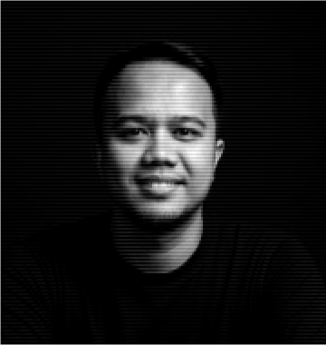

AUG 2025 — PRESENT
Grain Group · Remote
Project Manager, QA & Account Operator/Strategist
Project management, quality assurance, account operations, and strategy.
Project ManagementQAAccount Operations
Project Manager · QA · Digital Products
I’m Dicky Abdurachman, a Project Manager and Quality Assurance professional with 10+ years of experience managing digital projects, remote teams, and product delivery.

I work at the intersection of project management, quality assurance, and technology — helping teams stay aligned and making sure the product actually works.
Over the years, I’ve managed websites, web applications, mobile apps, games, and AI-related products with teams working remotely across different countries. My background also includes UI/UX design, frontend development, IT consulting, and technical recruitment.
I’ve worked with companies and teams in Indonesia, Singapore, the UK, and the US, collaborating across time zones and cultures to keep projects moving toward delivery.
From design and development to leading distributed engineering teams and QA.
Grain Group · Remote
Project management, quality assurance, account operations, and strategy.
Good Boy Studios · United States · Remote
Manage backend, mobile, and Unity3D developers working remotely from Bandung. Create project plans and delivery timelines, synchronize communication, support recruitment, and lead software QA.
Sagen AI · United States · Remote
Managed a multidisciplinary remote team building real-time AI assistants. Led project planning, team synchronization, and QA across apps and web products.
Kuvera Studio · Indonesia
Co-founded a digital product studio and managed projects from planning through delivery.
Eswete Studio · Bandung · Remote
Combined product direction, project management, and UI/UX design across websites, mobile apps, games, and interactive experiences.
Labtek Indie · Bandung
Facilitated Agile project management and team coordination.
Tinker Games · Bandung
Led team and project management in the Service Division, including timelines, pipeline, target delivery, client follow-up, and operational support.
Senja Solutions · Bandung
Designed application interfaces, websites, and game interfaces.
Zingmobile Pte Ltd · Singapore
UI/UX/GUI design for web games, mobile games, mobile apps, websites, and interactive media, plus art direction, game interface concepts, logos, icons, and animation.
Outsiders Indonesia · Bandung
Web layout concepts, web and mobile design, HTML/CSS slicing, logo design, and graphic design.
PT Gamma Epsilon · Bandung
Web administration, network maintenance, corporate identity design, personnel administration, and communication materials.
A selection from digital products, games, mobile applications, and interactive experiences.
Real-time, personal, expressive, character-based AI assistants. Managed project delivery and quality assurance across a distributed engineering team.
↗Mobile product associated with Good Boy Studios, where project management and QA were part of the delivery workflow.
↗A mobile game for cats, associated with Good Boy Studios. Project management and software quality assurance.
↗Mobile product associated with Good Boy Studios, with software QA and internal team communication responsibilities.
↗Mobile/VR game project using Samsung Gear VR and Oculus VR, developed through a collaboration between Tinker Games and Labtek Indie.
↗Digital library application for Android, developed with Eswete Studio using Android SDK, JSON, Eclipse, and Photoshop.
↗Full website redesign and development of a custom CMS, with responsibilities as producer, project manager, and art director.
↗Interactive Flash-based branded games and website experiences, acting as producer, game designer, and art director.
↗Planning, timelines, delivery tracking, stakeholder communication, and remote team coordination.
Functional testing, regression testing, bug reporting, reproduction steps, and release verification.
Cross-functional collaboration, recruitment support, technical interviews, and communication across time zones.
Web, mobile, games, AI products, UI/UX, frontend development, and technology consulting.
Universitas Komputer Indonesia (UNIKOM)
Have a project in mind?
Open to conversations about digital products, project management, QA, and collaboration.